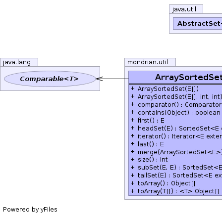
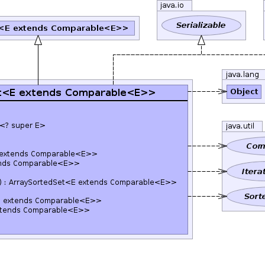
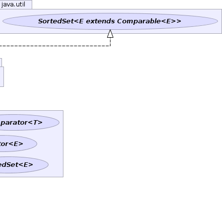

E - public class ArraySortedSet<E extends Comparable<E>> extends AbstractSet<E> implements SortedSet<E>, Serializable
SortedSet based on an array. The array
must already be sorted in natural order.|  |  |  |
| Constructor and Description |
|---|
ArraySortedSet(E[] values)
Creates a set backed by an array.
|
ArraySortedSet(E[] values,
int start,
int end)
Creates a set backed by a region of an array.
|
| Modifier and Type | Method and Description |
|---|---|
Comparator<? super E> |
comparator() |
boolean |
contains(Object o) |
E |
first() |
SortedSet<E> |
headSet(E toElement) |
Iterator<E> |
iterator() |
E |
last() |
ArraySortedSet<E> |
merge(ArraySortedSet<E> arrayToMerge)
Performs a merge between two
ArraySortedSet instances
in O(n) time, returning a third instance that doesn't include
duplicates. |
int |
size() |
SortedSet<E> |
subSet(E fromElement,
E toElement) |
SortedSet<E> |
tailSet(E fromElement) |
Object[] |
toArray() |
<T> T[] |
toArray(T[] a) |
equals, hashCode, removeAlladd, addAll, clear, containsAll, isEmpty, remove, retainAll, toStringpublic ArraySortedSet(E[] values)
values - Array of valuespublic ArraySortedSet(E[] values, int start, int end)
values - Array of valuesstart - Index of start of regionend - Index of first element after end of regionpublic Iterator<E> iterator()
iterator in interface Iterable<E extends Comparable<E>>iterator in interface Collection<E extends Comparable<E>>iterator in interface Set<E extends Comparable<E>>iterator in class AbstractCollection<E extends Comparable<E>>public int size()
size in interface Collection<E extends Comparable<E>>size in interface Set<E extends Comparable<E>>size in class AbstractCollection<E extends Comparable<E>>public Comparator<? super E> comparator()
comparator in interface SortedSet<E extends Comparable<E>>public SortedSet<E> subSet(E fromElement, E toElement)
subSet in interface SortedSet<E extends Comparable<E>>public SortedSet<E> headSet(E toElement)
headSet in interface SortedSet<E extends Comparable<E>>public SortedSet<E> tailSet(E fromElement)
tailSet in interface SortedSet<E extends Comparable<E>>public Object[] toArray()
toArray in interface Collection<E extends Comparable<E>>toArray in interface Set<E extends Comparable<E>>toArray in class AbstractCollection<E extends Comparable<E>>public <T> T[] toArray(T[] a)
toArray in interface Collection<E extends Comparable<E>>toArray in interface Set<E extends Comparable<E>>toArray in class AbstractCollection<E extends Comparable<E>>public ArraySortedSet<E> merge(ArraySortedSet<E> arrayToMerge)
ArraySortedSet instances
in O(n) time, returning a third instance that doesn't include
duplicates.
For example, ArraySortedSet("a", "b", "c").merge(ArraySortedSet("a", "c", "e")) returns ArraySortedSet("a", "b", "c", "e")}.
arrayToMerge - Other set to combine with thisUtil.intersect(java.util.SortedSet, java.util.SortedSet)public boolean contains(Object o)
contains in interface Collection<E extends Comparable<E>>contains in interface Set<E extends Comparable<E>>contains in class AbstractCollection<E extends Comparable<E>>